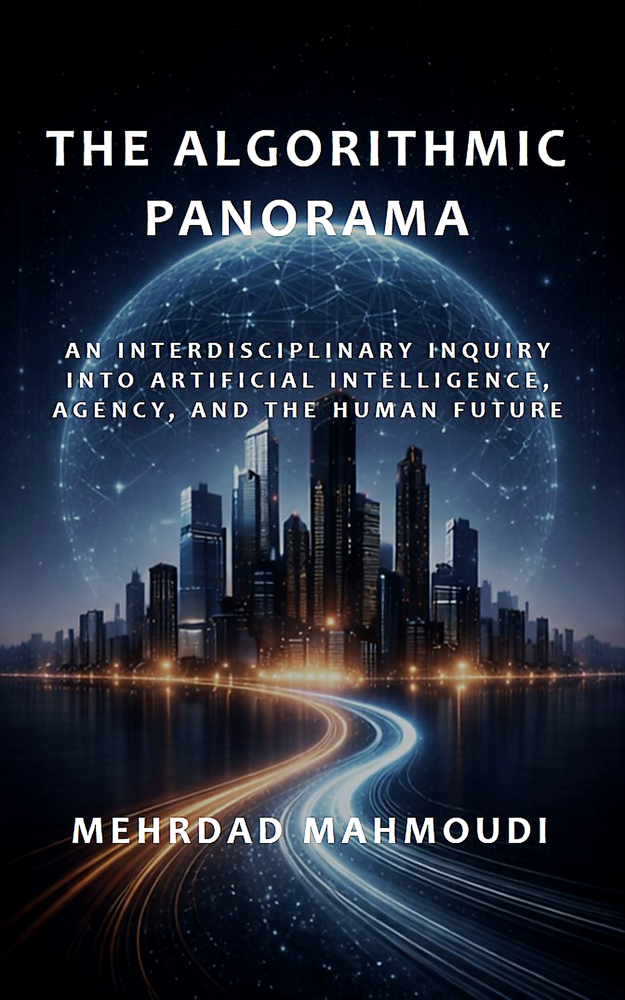
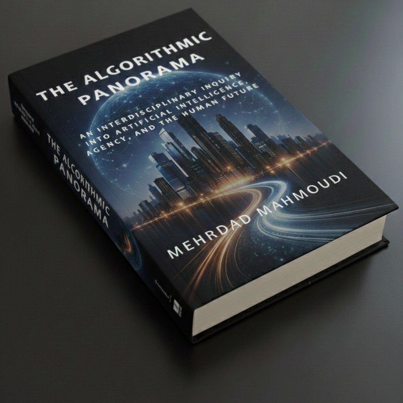

An Interdisciplinary Inquiry into Artificial Intelligence, Agency, and the Human Future
The Algorithmic Panorama explores the evolving relationship between artificial intelligence, human agency, technological systems, and the future of civilization.
Combining insights from philosophy, cognitive science, systems theory, ethics, political thought, and technology studies, the book examines how algorithmic structures increasingly shape perception, decision-making, culture, governance, and everyday life.
Rather than treating artificial intelligence as merely a technical achievement, the book investigates its broader implications for humanity, knowledge, freedom, institutions, and the long-term trajectory of civilization.

For updates, future publications, and project information, follow the links below.